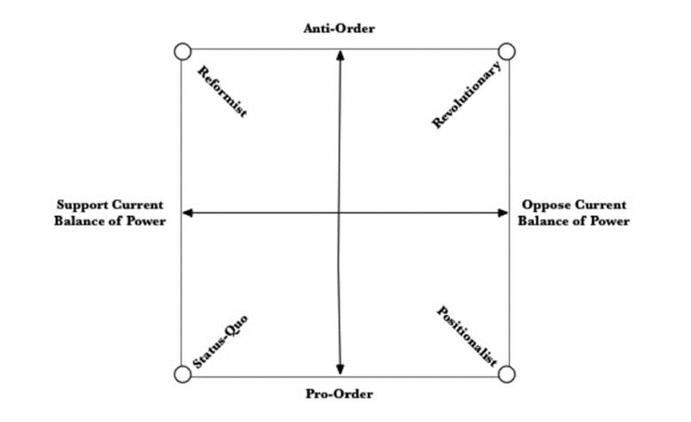

收录于合集 #理论研究 96个

作品简介
作者： Alexander Cooley，哥伦比亚大学政治学教授，研究领域包括欧亚与中亚地区的外部行为体与区域关系、新兴大国与全球治理等；Daniel Nexon，乔治城大学教授，研究领域包括国际关系理论、美国对外政策等；Steven Ward，剑桥大学政治与国际研究系讲师，2012年获乔治城大学博士学位，研究领域为国际安全与地位政治。
编译： 李源（国政学人编译员，南开大学周恩来政府管理学院硕士研究生）
来源： Cooley, A., Nexon, D., & Ward, S. (2019). Revising order or challenging the balance of military power? An alternative typology of revisionist and status-quo states. Review of International Studies, 45 (4), 689-708.
归档： 《国际关系前沿》2021年第9期，总第36期。
内容提要
仅从单个维度描述修正主义国家，即以维持现状——寻求彻底变革国际体系这样的单一连续体界定国家类型，忽视了改变军事力量分配与变革其他国际秩序要素之间的重要差异。本文提出了一种二维的分类方式，界定了四种理想类型：维持现状型行为体，即对当前国际秩序与军事力量分配均感到满意；改革主义行为体，即满意现有的权力分配格局但寻求改变国际秩序中的其他要素；位置主义行为体，即认为没有必要变革国际秩序但寻求改变权力分配格局；革命型行为体，即意图同时推翻现有国际秩序与权力分配格局。这一框架有助于理解关于霸权与国际秩序的既有争论，例如修正主义霸权国存在的可能性、软制衡概念的既有争议，以及权力转移期间如何供给国际公共物品等。
文章导读
01
修正主义及其概念化
“修正主义——维持现状”在当代国际关系理论特别是霸权秩序理论(hegemonic-order theories)[1]中扮演着重要角色。权力转移等理论认为，崛起国采取维持现状或修正主义的倾向解释了国际体系是否会经历普遍的大国战争。崛起国通常被认为倾向于修正主义，而霸权国倾向于维持现状，最终导致体系性战争的爆发。
当前学术界倾向于将修正主义理解为对世界事务状况的某种不满。最常见的做法是将其置于“修正主义——维持现状”这样一种单维连续体(one-dimensional continuum)中，国家为改变或捍卫现状而承担的成本界定了该连续体。因此，一个“绝对修正主义者”会不惜一切代价寻求变革，而一个“完全维持现状者”将不惜一切代价维护现有国际体系。介于两者之间的国家则不愿付出成本去挑战或维持现状。在该连续体上向左或向右移动，不满或满意的强度随之变化，所承担的成本也随之改变。兰德尔·施韦勒(Randall Schweller)的研究就是这一做法的典例。
然而，这种做法带来的问题是：第一， 它并未说明修正主义国家对何不满。 一些学者提出规范、规则、制度、领土与威望分配，以及权力分配等不满来源，但很少有研究将这些不满来源之间的关系及其如何影响修正主义国家的策略理论化。对领土分配不满的国家是否与对国际制度不满的国家在行为方式上相似？维持现状的行为体是否应当以不同方式应对它们？第二， 这种单个维度的做法难以始终区分修正主义与维持现状倾向。 例如，一国希望提高其军事力量，这种增加权力的想法显然是对国际体系某一关键要素的不满。但如果其寻求一种更加有利的权力分配是为了捍卫领土或制度秩序呢？在某种程度上，由于未能区分现状的不同维度，这种做法 难以理解霸权国如何以及为什么会转向修正主义。 例如，小布什(George W. Bush)政府显然认为自己在修改国际秩序的一些要素，但它同时还旨在维护美国霸权。这使得很难在更多或更少不满倾向的连续体中对小布什政府进行定位。霸权国必然以现状为导向的假定根深蒂固。许多霸权秩序理论都假定，主导国试图维持现状，而崛起国一定具有修正主义倾向。
为了解决这些问题，一些学者试图构建修正主义的多维框架。其目的不仅是概念化修正主义的强度或对当前国际安排的满意程度，而且还涉及不同的秩序要素。他们认为，修正主义不仅在程度上有所不同，在性质上也存在差异。明确这种差异有助于澄清修正主义大国在行为与战略上的不同。例如，史蒂芬·沃德(Steven Ward)提出修正主义的二维概念，区分了“分配性不满(distributive dissatisfaction)”与“规范性不满(normative dissatisfaction)”。前者是指渴望获得更多的资源，如军事力量或经济影响力；后者是指不满于使现有资源分配合法化的规则、规范与制度。这种划分能够更好地说明什么导致崛起大国发起不同类型的修正主义挑战，特别是解释为什么一些国家从提升地位的有限尝试转变为对更广泛秩序的激进挑战。
借鉴沃德的研究，本文从两个方面划分修正主义：从军事能力分配角度界定的权力均衡、从世界政治中其他物品的分配角度理解国际秩序的其他要素。权力均衡在霸权秩序理论与有关单极稳定性的争论中至关重要。例如，罗伯特·吉尔平(Robert Gilpin)指出，对国际体系的控制通过三种要素起作用：权力分配、威望等级与一系列的权利或规则。在他看来，权力的分配是最为重要的。大国建立并执行相关权利与规则，而威望等级取决于经济和军事力量。尽管军事力量均衡是国际秩序构成的一个子集，但权力分配与其他国际秩序要素之间存在差异，因此作者将这两者区分开来。这有助于我们更好地区分修正主义，集中探讨修正主义霸权国的可能性。
02
超越维持现状与修正主义国家

图一显示了修正主义的二维理想类型框架：反对国际秩序与反对当前的权力分配，由此产生了四种理想的国家类型。第一，理想中的 革命型国家(Revolutionary states) 是双重修正主义者，意图同时变革既有权力分配与更广泛的秩序。第二， 位置主义国家(Positionalist states) 满意既有秩序中的规则、规范与制度等要素，但意图改变权力分配，是权力分配修正主义者。革命型国家试图改变权力分配，并以此致力于改变其他秩序要素。而位置主义国家虽然也旨在改变权力分配，但却是为了维持更广泛的秩序。第三， 改革主义国家(Reformist states) 意图改变其他国际秩序现状，但满意既有的权力分配，是秩序修正主义者。第四，理想中的 维持现状型国家(Status-quo states) 对目前的权力分配与国际秩序的性质均表示满意。
译者评述
本文提出了划分修正主义类型的二维框架：是否反对军事力量分配与是否反对其他国际秩序要素，由此可以将国家划分为四种理想类型：维持现状型行为体、改革主义行为体、位置主义行为体与革命型行为体。“修正主义—维持现状”的二分类别既无法清晰说明国家对何现状满意抑或不满，也容易导致非此即彼的类型划分。本文提出了划分修正主义的两个维度，这种针对国际秩序不同维度的类别划分有助于超越“修正主义—维持现状”的二分法，从理论上对国家类型进行更为准确的定位。作者将权力分配与制度、规则等其他国际秩序要素区分开来在理论上也有具有价值的，因为在经验现实中对权力分配的不满并不必然伴随着寻求改变其他国际秩序要素，反之寻求改变其他国际秩序要素的国家也可能会寻求维持现有权力分配。但国际秩序包含了诸多构成要素，作者的第二个划分维度似乎过于笼统。例如，在既有研究中，很多学者都试图从国际制度的角度对修正主义进行界定与分类。本文也启发我们关注霸权国的修正主义倾向与行为，既有的权力转移等理论往往假定崛起国不满于现有秩序，霸权国则是维持现状的国家，而忽视了霸权国为何以及如何修正国际秩序的问题。如何对修正主义或修正主义国家进行更为准确的界定与衡量是现有理论研究面临的重要问题。一方面，修正主义是动态的，国家可能无时无刻都在不满于某些国际秩序要素并处于不断变化中；另一方面，并非所有的修正主义行为或者现状改变都可以被用来作为界定某个国家是否是修正主义国家的依据[2]。这提醒我们关注修正主义行为的范围、程度与性质。
注释和参考文献
[1]作者以霸权秩序理论作为一个涵盖权力转移、霸权稳定等理论的术语。
[2]宋伟：《国际关系中的修正主义：行为与国家》，载《教学与研究》，2021年第3期，第39页。
词汇整理
hegemonic-order theories 霸权秩序理论
revisionism 修正主义
责编 | 吴天麟 朱晓洁
排版 | 陈炜昊 柴昕彤

国政学人
支持学术公益与知识传播
微信扫一扫赞赏作者 __赞赏
已喜欢，对作者说句悄悄话
取消 __
发送给作者
发送
最多40字，当前共字
上一页 1/3 下一页
长按二维码向我转账
支持学术公益与知识传播
受苹果公司新规定影响，微信 iOS 版的赞赏功能被关闭，可通过二维码转账支持公众号。